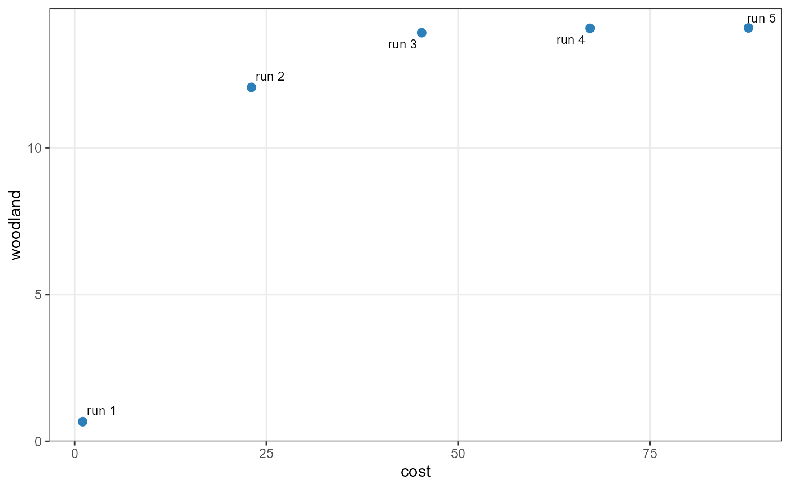
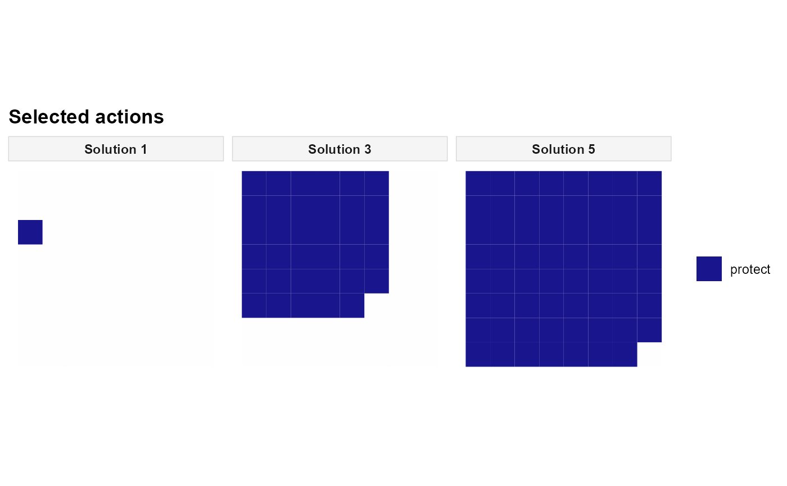

Configure the augmented epsilon-constraint method (AUGMECON)
Source:R/set_method_augmecon.R
set_method_augmecon.RdExplore trade-offs among registered objectives using AUGMECON. One objective is optimised directly, while the others are constrained by epsilon levels and contribute small, normalised improvement terms to discourage weakly efficient solutions.
Usage
set_method_augmecon(
x,
primary,
aliases = NULL,
runs = NULL,
grid = NULL,
n_points = NULL,
include_extremes = NULL,
lexicographic = TRUE,
lexicographic_tol = 1e-09,
augmentation = 0.001,
slack_upper_bound = 1e+06,
control = NULL
)Arguments
- x
A
Problemwith at least two registered objective aliases.- primary
Character scalar naming the objective optimised directly.
- aliases
Optional character vector of registered objective aliases. By default, all registered objectives are included;
primarymust be one of them.- runs
A run design from
set_runs_grid()orset_runs_manual(). Manual designs containeps_<alias>columns for all secondary objectives.- grid, n_points, include_extremes
Deprecated run-design arguments; use
runsinstead.include_extremesis ignored because automatic grids always include their endpoints.- lexicographic
Logical. Whether to use lexicographic anchoring when computing automatic-grid extreme points. Defaults to
TRUE.- lexicographic_tol
Non-negative tolerance for the lexicographic extreme-point calculation, in the objective's original units.
- augmentation
Positive coefficient for the normalised slack reward. Defaults to
1e-3.- slack_upper_bound
Positive upper bound for AUGMECON slack variables. Defaults to
1e6; it must not exclude feasible values.- control
Optional run-failure settings from
set_runs_control().
Value
An updated Problem with the method stored in x$data$method.
Payoff-table calculations and optimisation runs take place in solve().
Details
Register at least two objectives with distinct alias values. The
primary objective is optimised directly; the remaining objectives
selected by aliases become epsilon-constrained objectives. For example,
with woodland improvement as the primary objective and cost as secondary,
each run seeks the greatest improvement while keeping cost below a ceiling:
$$\max\ f_{\mathrm{woodland}}(x), \qquad
f_{\mathrm{cost}}(x) \le \varepsilon_{\mathrm{cost}}.$$
What augmentation changes. Ordinary epsilon-constraint may return a
weakly efficient plan when another objective could improve without changing
the primary objective. AUGMECON introduces a non-negative slack for every
secondary constraint and rewards normalised slack through a small positive
coefficient augmentation (Mavrotas, 2009). For a minimised cost objective,
the slack measures how far actual cost lies below its epsilon ceiling.
Schematically, with a maximised primary objective, AUGMECON uses
$$\max\ f_p(x) + \rho\sum_k \frac{s_k}{R_k},$$
where \(\rho\) is augmentation, \(s_k\) is the non-negative slack,
and \(R_k\) is the payoff-table range of the corresponding secondary
objective. The implementation handles the signs of minimisation and
maximisation objectives internally. Choose a small augmentation so that
secondary improvements do not unintentionally outweigh primary performance.
Automatic epsilon grids. Use runs = set_runs_grid(n = 5) to obtain
five epsilon levels, including the endpoints, for each secondary objective.
Levels and payoff-table ranges are calculated during solve().
With three objectives, for example, two secondary grids of five levels
yield up to 25 combinations. When lexicographic = TRUE, extreme-point
calculations use lexicographic anchoring, with lexicographic_tol
specifying the tolerance.
Manual thresholds. Use runs = set_runs_manual() to supply explicit
epsilon values, one row per run and one column named eps_<alias> for each
secondary objective. For a minimised cost objective, eps_cost = 20 means
cost at most 20, not exactly 20. Unlike automatic grids, manual rows are
not expanded into all possible combinations; use expand.grid() if needed.
Interpreting solutions. The augmentation reduces weak-efficiency
problems, but a finite epsilon grid does not enumerate every Pareto-optimal
plan, and different runs can produce identical spatial decisions. Numerical
tolerances and finite solver time limits also matter. A numerical refinement
pass may improve secondary slacks after an optimal augmented solve;
solver settings and epsilon-bound checks are available in the solution
diagnostics. slack_upper_bound must be large enough for valid slacks,
without being unnecessarily loose. Use set_runs_control() to manage
infeasible or unsuccessful runs.
Only one multi-objective method can be configured on a Problem; compare
methods by starting from the same problem before calling set_method_*().
The older grid, n_points, and include_extremes arguments are deprecated
in favour of runs.
References
Mavrotas, G. (2009). Effective implementation of the \(\varepsilon\)-constraint method in multi-objective mathematical programming problems. Applied Mathematics and Computation, 213(2), 455-465. doi:10.1016/j.amc.2009.03.037 .
Mavrotas, G., and Florios, K. (2013). An improved version of the augmented \(\varepsilon\)-constraint method (AUGMECON2) for finding the exact Pareto set in multi-objective integer programming problems. Applied Mathematics and Computation, 219(18), 9652-9669. doi:10.1016/j.amc.2013.03.002 . (Related extension; not the same method.)
Examples
# EXAMPLE: Maximise woodland improvement under alternative cost limits.
# Use the same 64-unit landscape and objectives as in the other MO methods.
sim <- load_sim_multiaction()
base <- create_problem(
pu = sim$planning_units,
features = sim$features,
dist_features = sim$dist_features,
cost = "cost"
) |>
add_actions(sim$actions, cost = sim$action_costs) |>
add_effects(sim$effect_assumptions) |>
# Require some improvement to avoid an empty low-cost solution.
add_constraint_targets_relative(0.05, features = "woodland") |>
add_objective_max_effect(
features = "woodland", alias = "woodland"
) |>
add_objective_min_cost(
include_pu_cost = FALSE, alias = "cost"
)
# Explore five cost ceilings. Small slack rewards help distinguish
# plans with similar woodland improvements but different costs.
augmecon <- set_method_augmecon(
base,
primary = "woodland",
aliases = c("woodland", "cost"),
runs = set_runs_grid(n = 5),
lexicographic = TRUE,
augmentation = 1e-3
)
if (requireNamespace("rcbc", quietly = TRUE) &&
requireNamespace("ggplot2", quietly = TRUE)) {
solutions <- solve(
set_solver_cbc(augmecon, time_limit = 30, verbose = FALSE)
)
# Actual cost may be lower than the epsilon ceiling.
get_objectives(solutions, format = "wide")
# Inspect the trade-off frontier generated by AUGMECON.
plot_tradeoff(
solutions, objectives = c("cost", "woodland"),
label_runs = TRUE
)
# Compare selected management actions for three epsilon levels.
# The three runs need not produce three different spatial plans.
plot_spatial_actions(
solutions, solutions = c(1, 3, 5), layout = "single", ncol = 3
)
}


# ALTERNATIVE: use three manually specified cost ceilings.
# Start again from 'base', before configuring a multi-objective method.
manual <- set_method_augmecon(
base,
primary = "woodland",
aliases = c("woodland", "cost"),
runs = set_runs_manual(data.frame(eps_cost = c(10, 20, 40))),
augmentation = 1e-3
)